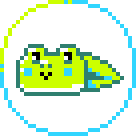
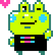

<div class="row dev-stage-selector">
	<div class="col-xs-12"
		v-for="stage of stages"
		>
		<a @click="select( stage )">
			<app-card :is-disabled="!isEnabled( stage )">
				<div class="dev-stage-selector-content">

					<div class="card-title">
						<h4>
							<app-jolticon :icon="game && game.development_status === stage ? 'radio-circle-filled' : 'radio-circle'" />
							<span v-if="stage === Game.DEVELOPMENT_STATUS_DEVLOG">
								<translate>Devlog-Only</translate>
							</span>
							<span v-else-if="stage === Game.DEVELOPMENT_STATUS_WIP">
								<translate>Early Access</translate>
							</span>
							<span v-else-if="stage === Game.DEVELOPMENT_STATUS_FINISHED">
								<translate>Complete/Stable</translate>
							</span>
						</h4>
					</div>

					<div class="card-content">
						<div v-if="stage === Game.DEVELOPMENT_STATUS_DEVLOG">
							<div>
								<translate>You don't have anything playable yet, but would like to share active game development in the form of images, videos, posts and more. Your game page will use the new Devlog format.</translate>
							</div>
						</div>
						<div v-else-if="stage === Game.DEVELOPMENT_STATUS_WIP">
							<div>
								<translate>Your game has playable builds, but you're still actively developing it.</translate>
							</div>
						</div>
						<div v-else-if="stage === Game.DEVELOPMENT_STATUS_FINISHED">
							<div>
								<translate>Your game is complete. It's in a stable state and you only plan on making bug fixes, performance optimizations, or small improvements.</translate>
							</div>
						</div>
					</div>

					<div v-if="!isEnabled( stage )">
						<br>
						<div class="alert alert-info sans-margin">
							<app-jolticon icon="notice" />
							<translate>You must have active published packages to transition to this stage.</translate>
						</div>
					</div>

				</div>

				<div class="dev-stage-selector-mascot">

					

					

					

				</div>
			</app-card>
		</a>
	</div>
</div>
